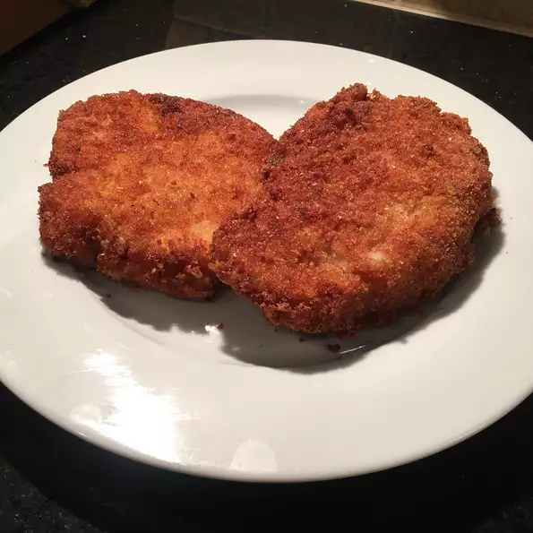

Schnitzel

Wiener Schnitzel
'Wiener' this word comes from the world 'Wien', which is the Austrian
city called Vienna. 'Schnitzel' means basically meat in a crust.
Ingredients
- 2 pounds veal
- 1 coup all purpose flour
- 4 eggs
- 1 tablespoon vegetable oil
- salt and pepper to taste
- 4 cups bread crumbs
- half cup oil for frying
Steps
- Cut the veal into steaks, about as thick as your finger. Dredge in flour.
In a shallow dish, beat the eggs with 1 tablespoon oil, salt and pepper. Coat the veal with egg mixture, then with bread crumbs.
- Heat 1/4 cup oil in a heavy skillet over medium heat. Fry veal until golden brown, about 5 minutes on each side.